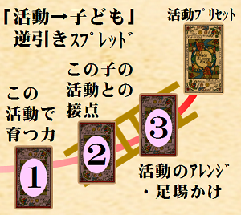
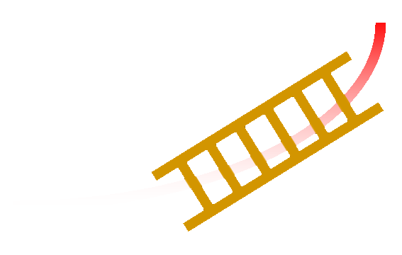
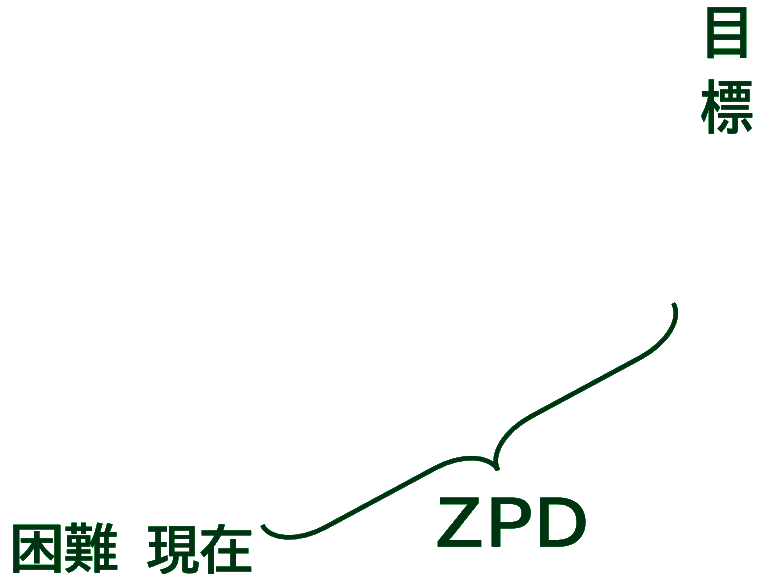
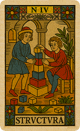
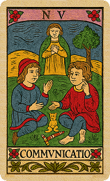
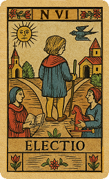

ヴィゴツキーの
発達の最近接領域を
応用しています
▲保育TAROT TOP
|
▲TAROT TOP
|
▲BLOG
|
▲Youtube
「活動→子ども」逆引きスプレッド
(2～5歳児クラス)
活動プリセット × ブリッジ行列 → ZPD空間マッチング
ブラウザに保存された事例と15次元ベクトル：
表示/非表示
★(発達の最近接領域)用の15次元の値(-1.0～+1.0)は、ZPDマークのある、違うスプレッドでも使えます。

★(発達の最近接領域)用の15次元の値(-1.0～+1.0)は、ZPDマークのある、違うスプレッドでも使えます。
【用途】
「やってみたい
活動
」から特定の子の
発達
を逆算し、活動で育つ力・接点を把握し、その子向けの工夫を考える。
【特徴】
「
選んだ活動がこの子のZPD(発達の最近接領域)にどう作用するか
」を読む。
ヴィゴツキーの
発達の最近接領域(Zone of Proximal Development)
の理論を応用。
【このスプレッドではAIに2回依頼します】
お子さんの様子の自由テキスト入力
→AI解析
AI提示の
発達プロファイルの値を確認し調整する
一覧の中から
保育活動を選ぶ
3枚のカードをひく
→AIによる
ZPD リーディング
で完結。
>>>
さらに説明を開く
選択プリセットNo
, Vec
, loadkaisuu
, 回転
, アンチ
, 橋
, 最終Q
, 最終Qv
, top1
, top2
, top3
, top4
, セレアク1
, セレアク2
, セレアク3
Step 1｜お子さんの様子を教えてください(
※個人を特定できる情報は含めない
でください)
まず、年齢を選んでください
年齢
:
↓選択↓
2歳
3歳
4歳
5歳
児クラス
※年齢を変更すると、文章がクリアされます
似た事例を探します
絞り込み：
運動・身体
｜
情緒・行動
｜
生活スキル
｜
環境デザイン
｜
保育者協働
｜
育ちの時系列
｜
感覚・身体
｜
言語・コミュ
｜
遊びの拡張
事例
: なるべく「状況が近い」と思う事例を選択。↓年齢は違っても大丈夫です。:
↓ ↓ 事例を選んでください ↓ ↓
お子さんの様子:
似てるかも？(↓リンククリックで/↑入力欄テキスト更新
※文章書きかけ注意
)：
✦ 発達プロファイルを生成する（プロンプト出力）
Step 2｜発達プロファイルを確認・調整
AIに渡すプロンプト(数値解析)：
📋 コピー
↓ ↓ ↓ ↓
AI依頼リンク集
代表的なものを集めました。どの会話型AIでも、このプロンプトを理解して数値を提案してくれます。
ChatGPT
Claude(クロード)
Google Gemini
Manus
perplexity
Qwen Chat
他に、リンクは貼れませんが、X(旧ツイッター)のGrok、Microsoft Copilot(コパイロット) 、でも動作します。
↓ ↓ ↓ ↓
ボタン有効化
AIが解析した15次元ベクトル数値を一括貼り付け
反映
例: 0.5,0.3,-0.2,0.2,0.9,0.1,0.2,-0.3,0.4,0.2,0.3,0.2,0.3,0.1,0.3
発達レーダー（15次元）
外周のA1などにマウスを乗せると値の詳細が表示されます。
▶️ 次に進む
Step 3 ｜ 活動を選んでください
スコアはこの子のQベクトルとの「接点(40%)＋成長余地(60%)」で計算しています。
上位活動が自動ソートされます。
🃏 カードを引く
非常ボタン（ボタンが無効で進めない時にクリック）
Step 4｜「活動→子ども」逆引きスプレッド
✦ ZPDリーディングを依頼するプロンプトを出力
AIに渡すプロンプト：
📋 コピー
ここまでで完結です。
以下は計算などの詳細です。見なくても支障ありません。





1. 現在の発達段階
2. 発達の芽生え
3. 発達の壁
4. 発達の橋
今
少し先
足場かけ
目指したい育ちの方向
- - - - - - 最近接発達領域 - - - - - -
(Zone of Proximal Development)
Developmental Dynamics 4
ZPD 構造マップ
✦ ZPDリーディングを依頼するプロンプトを出力
AIに渡すプロンプト：
📋 コピー
最初からやり直す